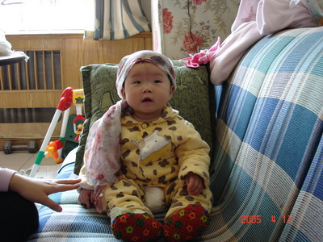
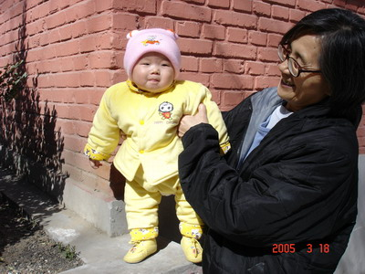

曼曼满六个月之后，我渐渐敢让她自己坐在床上了。好像突然之间似的，曼曼已经会坐了。开始还有点不稳，坐一会儿就往左右摇晃，有时还往后倒，渐渐的越来越稳，自己能直直的坐在床上玩好一会儿玩具。

躺在床上的时候，曼曼会连续翻身了，在床上翻来翻去，很是灵活。
曼曼会伸手作“挠挠”的动作。
曼曼偶尔会双手并拢上下作揖作“谢谢”的动作。
曼曼有一阵儿已经认识了“灯”、“挂历”，可是几天没给她复习她又忘了。
虽然曼曼没怎么喝过母乳，这时也已经胖得像一只小猪了。

赵阿姨带曼曼的时候，小家伙胖的像只小猪
快满7个月的时候，曼曼发了次烧，烧了三天。我估计是幼儿急疹，没带她去医院，也没给她吃退烧药，就是多喝水。她烧了三天，烧退后出了2天疹子，疹子退了就好了。我一直得意对她这次发烧处理得当，要不然带到医院折腾一番不说，估计医生非要让她打点滴不可。